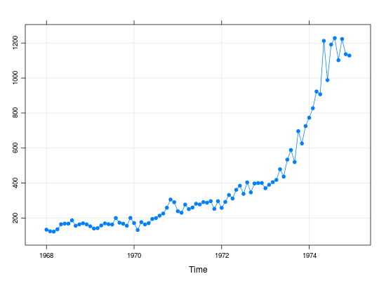

Dados sobre o valor monetário de importações feitas pelo Brasil, de acordo com o Banco Central do Brasil. Os dados referem-se a valores mensais no período de 1968 a 1974, mensurados em milhões de dólares.
Uma série temporal (classe ts) com 84 observações
mensais, de janeiro de 1968 a dezembro de 1974.
Morettin, P. A., Toloi, C. M. C. (2006). Análise de Séries Temporais (2nd ed.). São Paulo, SP: Editora Egard Blucher. (Tabela 3.12 pág. 78)
data(MorettinTb3.12) str(MorettinTb3.12)#> Time-Series [1:84] from 1968 to 1975: 134 125 123 136 165 ...MorettinTb3.12#> Jan Feb Mar Apr May Jun Jul Aug Sep Oct #> 1968 133.8 124.9 122.8 135.8 164.8 168.5 168.4 187.3 156.1 164.2 #> 1969 153.4 140.6 142.7 157.9 169.9 165.5 163.5 200.4 173.8 168.0 #> 1970 172.0 132.0 177.0 164.0 171.0 195.0 200.0 214.0 226.0 259.0 #> 1971 239.4 230.7 277.4 251.4 260.2 282.3 278.0 291.4 288.0 297.0 #> 1972 258.6 292.4 332.2 312.1 361.6 385.0 338.6 404.0 347.0 397.9 #> 1973 370.7 390.3 405.3 418.2 479.2 436.9 534.1 588.7 520.1 696.7 #> 1974 773.5 827.6 923.2 907.4 1212.5 988.2 1191.3 1228.0 1102.0 1223.0 #> Nov Dec #> 1968 170.4 164.3 #> 1969 156.4 201.1 #> 1970 306.0 291.0 #> 1971 252.9 296.8 #> 1972 400.4 400.5 #> 1973 626.4 725.6 #> 1974 1136.1 1128.5summary(MorettinTb3.12)#> Min. 1st Qu. Median Mean 3rd Qu. Max. #> 122.8 170.3 280.2 388.9 408.5 1228.0# Médias anuais aggregate(MorettinTb3.12, FUN = mean)#> Time Series: #> Start = 1968 #> End = 1974 #> Frequency = 1 #> [1] 155.1083 166.1000 208.9167 270.4583 352.5250 516.0167 1053.4417# Médias mensais tapply(MorettinTb3.12, cycle(MorettinTb3.12), mean)#> 1 2 3 4 5 6 7 8 #> 300.2000 305.5000 340.0857 335.2571 402.7429 374.4857 410.5571 444.8286 #> 9 10 11 12 #> 401.8571 457.9714 435.5143 458.2571library(lattice) xyplot(MorettinTb3.12, type = c("o", "g"), pch = 19)# Decomposição sazonal da série plot(stl(MorettinTb3.12, s.window = 12))